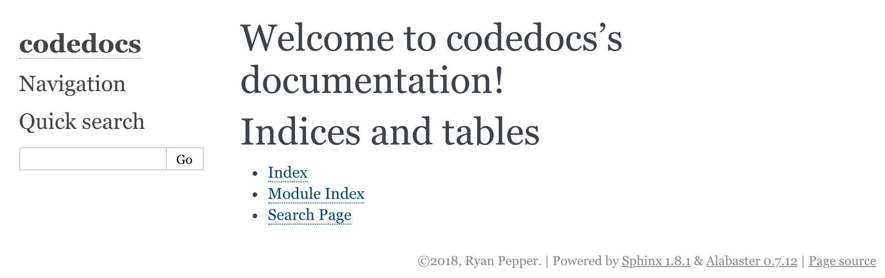

Generating documentation webpages with Sphinx
Setting up a Python Module
1) Create a new folder called ‘codedocs’ to work in for this exercise. Change into this folder and ‘git init’ in it to keep track of files.
2) In order to document some code, we’re going to arrange our Git repository in a common way, so that the code is separate from the documentation. Create a folder called ‘codedocs’ and create a file called ‘functions.py’ Create a Python file with the example we showed earlier inside.
def squared(x):
"""
Returns the square of the input x
Longer description - the square is found by multiplying x by x...
Parameters:
-----------
x, float:
Base number
Returns:
--------
float:
Base number raised to power 2
See Also:
---------
pow : raise an argument to an arbitrary power
Examples
--------
>>> squared(2)
4
>>> squared(8)
64
>>> squared(-1)
1
"""
return x*xAdd and commit this file to your Git repository.
4) In order that we can make our Python code importable as a module and use the functions in it directly, create another Python file in the ‘codedocs’ subdirectory called ‘init.py’, with the following content:
from .functions import *5) With this file layout, we can now use the code in Python. Just to show you, launch a container:
# Linux and Mac
docker run --rm -v $(pwd):/app sphinx python3
# Windows
docker run --rm -v %cd%:/app sphinx python3
Now you can import and test out the function:
>>> import codedocs
>>> codedocs.squared(2.0)
4.05) We can make the module an installable Python package just by adding a file called setup.py at the root directory of the Git repository:
from distutils.core import setup
setup(name='codedocs',
version='1.0',
py_modules=['codedocs'],
)This means that someone can come along and install your repository onto their computer just by running the command:
pip install .inside the folder.
Setting up Sphinx
1) Put a Dockerfile in the root directory of your repository:
from ubuntu:18.04
RUN apt-get update && apt-get install -y python3 python3-pip
RUN pip3 install numpy matplotlib sphinx
WORKDIR /appAdd the Dockerfile to your repository and commit it. Build and start the container with:
docker build . -t documentation
# Linux and Mac
docker run -v $(pwd):/app -it documentation
# Windows
docker run -v %cd%:/app -it documentation2) Now in the container, we’re going to run a configuration application, which sets up everything we need to build documentation from our code. Create a folder, then run the sphinx configuration application. You only ever have to do this once; it’s just a quick way of getting what you need to get started.
mkdir docs
sphinx-quickstart docsSphinx now prompts you with a lot of questions, which set up the generation of documentation. The default suggestion is given in square brackets at the end of the line. To each question, answer it. For most, you can use the default, but some you cannot and must type a response; if there is no text specified after the end colon for the question below, use the default value (just press ‘Enter’ on your keyboard)
> Separate source and build directories (y/n) [n]:
> Name prefix for templates and static dir [_]:
> Project name: My Documentation Example
> Author name(s): Ryan Pepper
> Project release []: 0.0.1
> Source file suffix [.rst]:
> Name of your master document (without suffix) [index]:
> Do you want to use the epub builder (y/n) [n]:
Indicate which of the following Sphinx extensions should be enabled:
> autodoc: automatically insert docstrings from modules (y/n) [n]: y
> doctest: automatically test code snippets in doctest blocks (y/n) [n]: y
> intersphinx: link between Sphinx documentation of different projects (y/n) [n]:
> todo: write "todo" entries that can be shown or hidden on build (y/n) [n]:
> coverage: checks for documentation coverage (y/n) [n]:
> imgmath: include math, rendered as PNG or SVG images (y/n) [n]:
> mathjax: include math, rendered in the browser by MathJax (y/n) [n]: y
> ifconfig: conditional inclusion of content based on config values (y/n) [n]:
> viewcode: include links to the source code of documented Python objects (y/n) [n]: y
> githubpages: create .nojekyll file to publish the document on GitHub pages (y/n) [n]:
> Create Makefile? (y/n) [y]:
> Create Windows command file? (y/n) [y]:Inside the ‘docs’ folder, Sphinx has now created several folders and files, which are where documentation gets built.
3) The file ‘conf.py’ is just a Python script which contains all of the configuration options you set in the quickstart script, so don’t worry if you want to change something. We need to make a few changes to conf.py which mean that we can autogenerate some documentation for the code.
- Change the contents of the section ‘Path Setup’ to the following:
import os
import sys
sys.path.insert(0, os.path.abspath('..'))These commands make our module ‘codedocs’ visible to Sphinx, so that it can see all of the source files.
There is a list of extensions that looks like this:
extensions = [ 'sphinx.ext.autodoc', 'sphinx.ext.doctest', 'sphinx.ext.mathjax', 'sphinx.ext.viewcode', ]We need to add an extension which makes our nice NumPy documentation work. Do this by adding ‘sphinx.ext.napoleon’ to this list.
Just after this, add the lines:
napoleon_google_docstring = False
doctest_global_setup = """
from codedocs import *
"""Later, we’re going to run something called Doctest. Remember the lines of code we put into the squared function? Doctest runs these and checks that the output is consistent with what we wrote.
4) We’re now done configuring the conf.py, so let’s actually generate some files. Sphinx has an application called ‘apidoc’. An API (application programme interface) is the defined inputs and outputs of functions in software. We’ve already specified these in the function docstring for ‘squared’. So all sphinx-apidoc is doing is reading our source code files, and generating ‘rst’ files from them.
Making sure you’re in the ‘docs’ folder in your container, run the following command.
sphinx-apidoc -o source ../codedocs
Now, we can get a very ‘simple’ version of our documentation by just running:
make html
This turns all of our generated files into HTML files that can be read and displayed by a web browser. Find the folder in your file explorer, and open ‘index.html’ inside docs/_build/html. You should see a website that looks something like the following; at the moment it does not look like much!

However, have a look around the ‘Module Page’ - you should be able to spot our module. Clicking it should show us the documentation we wrote for the squared function!
Broader documentation
1) We can edit the homepage to make it a bit more informative. We’ll edit ‘index.rst’. This file is written in the ReStructured Text format.
This file at the moment should look like this:
.. codedocs documentation master file, created by
sphinx-quickstart on Tue Oct 30 00:05:22 2018.
You can adapt this file completely to your liking, but it should at least
contain the root `toctree` directive.
Welcome to codedocs's documentation!
====================================
.. toctree::
:maxdepth: 2
:caption: Contents:
Indices and tables
==================
* :ref:`genindex`
* :ref:`modindex`
* :ref:`search`
Add in some text after the Welcome message like below to describe that we’re setting up documentation with Sphinx.
Welcome to codedocs's documentation!
====================================
codedocs is an example project that we're setting up at a workshop on the
30th October 2019.
What is the point of this?
--------------------------
Documentation is crucial to using software!
.. toctree::
:maxdepth: 2
:caption: Contents:Save the file, and run ‘make html’ again, and refresh the page. You can see that the ‘===’ under a title makes it a page title, and the ‘—’ a subtitle. Here, we can see some complex looking stuff called a ‘toctree’. This is just a pointer to Sphinx to place the table of contents here.
3) We’re now going to add a new file. Creating tutorials with examples is a good way to build up documentation for large projects.
First, create a file called ‘tutorial.rst’ and inside it put some contents:
Tutorial!
=========
On this page we're going to do some tutorial stuff!
The following few lines are some code.
.. code-block:: python
print("This is some Python code")At the moment, if we run ‘make html’, we wouldn’t see a link to it anywhere on the homepage of our site. We need to add our file to the table of contents somewhere! In index.rst, modify the ‘toctree’ to the following.
.. toctree::
:maxdepth: 2
:caption: Contents:
tutorial
Note the blank line - Sphinx is quite sensitive! It will often fail to build if you miss this.
You can add as many things as you like to your web page - just add more rst files, and
add them to the toctree. Run make html again and you should see your changes on the webpage.
Hosting the Documentation
You’ve created a web page full of documentation, but how can you put it online?
A free ad-powered service called Read The Docs exists exactly for this purpose. It is very easy and quick to set up, if you have your repository set up in the correct format.
1) Create a repository called codedocs-yoursurname on GitHub and add all of the files (but NOT the _build directory), and push our local repository to it.
2) Go to Read the Docs, and log in with your GitHub account.
3) Click ‘Import Repository’, and select codedocs.
4) If the build doesn’t start automatically, start the build.
5) Now go to codedocs-yoursurname.rtfd.org to see your documentation!